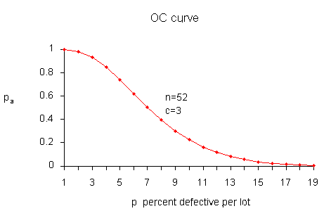
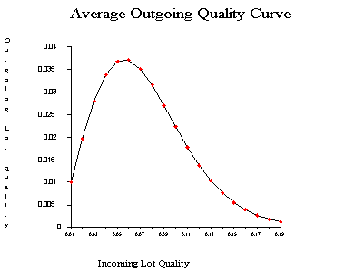
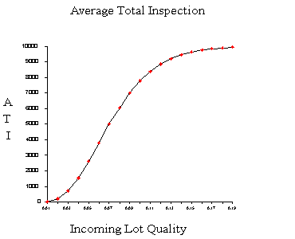

|
6.
Process or Product Monitoring and Control
6.2. Test Product for Acceptability: Lot Acceptance Sampling 6.2.2. How do you Choose a Single Sampling Plan?
|
|||
| OC curves | We start by looking at a typical OC curve. The
OC curve for a (52, 3) sampling plan is shown below.

It is instructive to show how the points on this curve are obtained, once we have a sampling plan \((n,c)\) - later we will demonstrate how a sampling plan \((n,c)\) is obtained. We assume that the lot size \(N\) is very large, as compared to the sample size \(n\), so that removing the sample doesn't significantly change the remainder of the lot, no matter how many defects are in the sample. Then the distribution of the number of defectives, \(d\), in a random sample of \(n\) items is approximately binomial with parameters \(n\) and \(p\), where \(p\) is the fraction of defectives per lot. The probability of observing exactly \(d\) defectives is given by |
||
| The binomial distribution |
$$ P(d) = f(d) = \frac{n!}{d!(n-d)!} p^d (1-p)^{n-d} \, . $$
The probability of acceptance is the probability that \(d\), the number of defectives, is less than or equal to \(c\), the acceptance number. This means that $$ P_a = P(d \le c) = \sum_{d=0}^c \frac{n!}{d!(n-d)!} p^d (1-p)^{n-d} \, . $$ Using this formula with \(n = 52\), \(c=3\), and \(p = 0.01, \, 0.02, \, \ldots, \, 0.12 \) we find $$ \begin{eqnarray} P_a & \,\,\,\,\, & P_d \\ 0.998 & \,\,\,\,\, & 0.01 \\ 0.980 & \,\,\,\,\, & 0.02 \\ 0.930 & \,\,\,\,\, & 0.03 \\ 0.845 & \,\,\,\,\, & 0.04 \\ 0.739 & \,\,\,\,\, & 0.05 \\ 0.620 & \,\,\,\,\, & 0.06 \\ 0.502 & \,\,\,\,\, & 0.07 \\ 0.394 & \,\,\,\,\, & 0.08 \\ 0.300 & \,\,\,\,\, & 0.09 \\ 0.223 & \,\,\,\,\, & 0.10 \\ 0.162 & \,\,\,\,\, & 0.11 \\ 0.115 & \,\,\,\,\, & 0.12 \, . \end{eqnarray} $$ |
||
| Equations for calculating a sampling plan with a given OC curve | Solving for \((n,c)\)
In order to design a sampling plan with a specified OC curve one needs two designated points. Let us design a sampling plan such that the probability of acceptance is \(1-\alpha\) for lots with fraction defective \(p_1\) and the probability of acceptance is \(\beta\) for lots with fraction defective \(p_2\). Typical choices for these points are: \(p_1\) is the AQL, \(p_2\) is the LTPD and \(\alpha\), \(\beta\) are the Producers Risk (Type I error) and Consumers Risk (Type II error), respectively. If we are willing to assume that binomial sampling is valid, then the sample size, \(n\), and the acceptance number, \(c\), are the solution to $$ \begin{eqnarray} 1-\alpha & = & \sum_{d=0}^c \frac{n!}{d!(n-d)!} p_1^d (1-p_1)^{n-d} \\ \beta & = & \sum_{d=0}^c \frac{n!}{d!(n-d)!} p_2^d (1-p_2)^{n-d} \, . \end{eqnarray} $$ These two simultaneous equations are nonlinear so there is no simple, direct solution. There are however a number of iterative techniques available that give approximate solutions so that composition of a computer program poses few problems. |
||
| Calculating \(AOQ\) | Average Outgoing Quality (\(AOQ\))
We can also calculate the \(AOQ\) for a \((n,c)\) sampling plan, provided rejected lots are 100 % inspected and defectives are replaced with good parts. Assume all lots come in with exactly \(p_0\) proportion of defectives. After screening a rejected lot, the final fraction defectives will be zero for that lot. However, accepted lots have fraction defective \(p_0\). Therefore, the outgoing lots from the inspection stations are a mixture of lots with fractions defective \(p_0\) and 0. Assuming the lot size is \(N\), we have $$ AOQ = \frac{p_a p(N-n)}{N} \, . $$ For example, let \(N=10,000\), \(n = 52\), \(c=3\) and \(p\), the quality of incoming lots, = 0.03. Now at \(p=0.03\), we glean from the OC curve table that \(p_a=0.930\) and $$ AOQ = \frac{0.930(0.03)(10,000-52)}{10,000} = 0.00278\, . $$ Setting \(p = 0.01, \, 0.02, \, \ldots, \, 0.12\), we can generate the following table. $$ \begin{eqnarray} AOQ & \,\,\,\,\, & P_d \\ 0.0010 & \,\,\,\,\, & 0.01 \\ 0.0196 & \,\,\,\,\, & 0.02 \\ 0.0278 & \,\,\,\,\, & 0.03 \\ 0.0338 & \,\,\,\,\, & 0.04 \\ 0.0369 & \,\,\,\,\, & 0.05 \\ 0.0372 & \,\,\,\,\, & 0.06 \\ 0.0351 & \,\,\,\,\, & 0.07 \\ 0.0315 & \,\,\,\,\, & 0.08 \\ 0.0270 & \,\,\,\,\, & 0.09 \\ 0.0223 & \,\,\,\,\, & 0.10 \\ 0.0178 & \,\,\,\,\, & 0.11 \\ 0.0138 & \,\,\,\,\, & 0.12 \end{eqnarray} $$ A plot of the \(AOQ\) versus \(p\) is given below.  From examining this curve we observe that when the incoming quality is very good (very small fraction of defectives coming in) then the outgoing quality is also very good (very small fraction of defectives going out) When the incoming lot quality is very bad, most of the lots are rejected and then inspected. The "duds" are eliminated or replaced by good ones, so that the quality of the outgoing lots, the \(AOQ\), becomes very good. In between these extremes, the \(AOQ\) rises, reaches a maximum, and then drops. The maximum ordinate on the \(AOQ\) curve represents the worst possible quality that results from the rectifying inspection program. It is called the average outgoing quality limit, (\(AOQL\)). From the table we see that the \(AOQL = 0.0372\) at \(p = 0.06\) for the above example. One final remark: if \(N \gg n\), then \(AOQ \approx p_a p\). |
||
|
Calculating the Average Total Inspection |
The Average
Total Inspection (\(ATI\))
What is the total amount of inspection when rejected lots are screened? If all lots contain zero defectives, no lot will be rejected. If all items are defective, all lots will be inspected, and the amount to be inspected is \(N\). Finally, if the lot quality is \(0 < p < 1\), the average amount of inspection per lot will vary between the sample size \(n\), and the lot size \(N\). Let the quality of the lot be \(p\) and the probability of lot acceptance be \(p_a\), then the \(ATI\) per lot is $$ ATI = n + (1-p_a)(N-n) \, . $$ For example, let \(N = 10,000\), \(n=52\), \(c=3\), and \(p=0.03\). We know from the OC table that \(p_a = 0.930\). Then $$ ATI = 52 + (1-0.930)(10,000-52) = 753 \, . $$ Setting \(p = 0.01, \, 0.02, \, \ldots, \, 0.14\) generates the following table. $$ \begin{eqnarray} ATI & \,\,\,\,\, & P_d \\ 70 & \,\,\,\,\, & 0.01 \\ 253 & \,\,\,\,\, & 0.02 \\ 753 & \,\,\,\,\, & 0.03 \\ 1584 & \,\,\,\,\, & 0.04 \\ 2655 & \,\,\,\,\, & 0.05 \\ 3836 & \,\,\,\,\, & 0.06 \\ 5007 & \,\,\,\,\, & 0.07 \\ 6083 & \,\,\,\,\, & 0.08 \\ 7012 & \,\,\,\,\, & 0.09 \\ 7779 & \,\,\,\,\, & 0.10 \\ 8388 & \,\,\,\,\, & 0.11 \\ 8854 & \,\,\,\,\, & 0.12 \\ 9201 & \,\,\,\,\, & 0.13 \\ 9453 & \,\,\,\,\, & 0.14 \end{eqnarray} $$ A plot of \(ATI\) versus \(p\), the Incoming Lot Quality (ILQ) is given below.  |
||